将鼠标移到功能表中您想要删除的表单或页签上，右方将会出现一小箭头图示，点选箭头，再选择「删除」即可；或者直接在您想要删除的表单或页签上，点选鼠标右键，接着选择「删除」亦可。
如果您不小心删除了表单或页签想要复原，您可以与我们联络support@ragic.com，我们将立即帮您处理。
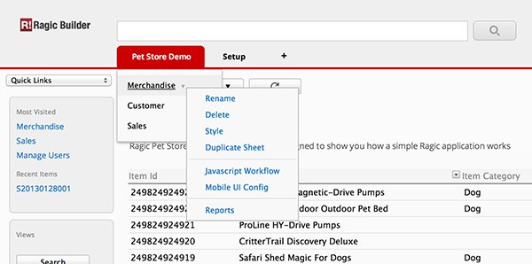
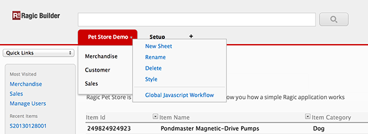
要修改保存格的高度与宽度，您可以先进入设计模式(点选表单上「修改设计」)，接着就像使用Excel一样，将鼠标移到最上方A、B、C…每栏的边界处，鼠标将变为双箭头，此时即可利用拖拉方式，设定保存格的宽度；同样的，移到最左方1、2、3…栏的边界处，即可以调整保存格的高度。
调整完毕后记得「保存」，之后每个人所看到的这张表单，都将会是您调整过后的样子。
您也可以在一般浏览时，利用上述方式调整保存格的高度及宽度，以便观看，但这些调整在下次进来这张表单时不会被记住。
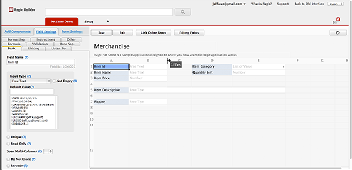
当然可以，这是Ragic最大的特色!
将不同表单的字段互相连结，仅需要2步, 我们以Sales表单及Customer表单为例:
1. Linked Fields: 假设我们在Sales表单新增一Customer字段，提供使用者在新增订单时选择客户之用，Customer字段的数据来源为Customer表单. 我们称此Customer字段为linked field.
你会发现Customer字段的数据内容为Customer Id，即Customer表单中的第一个字段，在Ragic，表单的第一个字段我们称做 Key Field, 在设计模式时为该字段为深蓝色。 Linked Fields会关联到另一个表单的Key Field, 就像Sales表单的Customer字段关联到Customer表单的Customer Id。
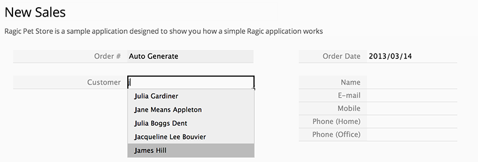
2. Loaded Fields: 当使用者在Sales表单中的Customer字段选择了一个客户，Ragic可以连带地将他在Customer表单中的电话、住址等数据带入Sales表单中。这可以大大减少数据输入的时间，让你的系统看起来更聪明，我们称这些自动带入的字段为loaded fields.
Linked Field及Loaded Fields的设定很简单，使用我们的连结管理便可轻松完成(在设计模式，点选「连结其它表单」按钮，即可进入连结管理)。
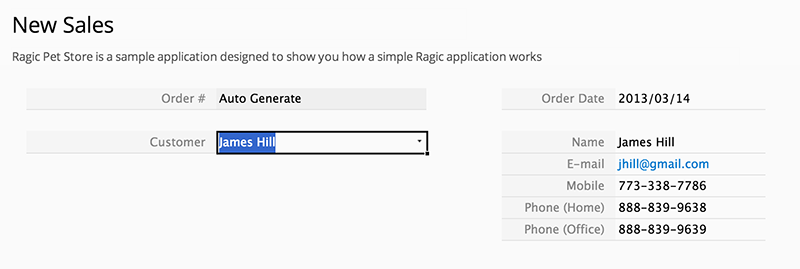
在连结管理中，您必须先设定Linked Field，首先，在左边画面(即您正在设计的表单)，点选您既有的字段(Ex.Customer) 或任何一个空白保存格，接着，系统便会自动将它与右方表单中的Key field相连结(如同我们之前所说的，Linked Field必定与Key Field相连)。
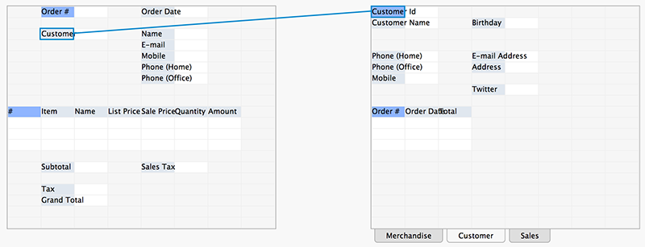
接着您可以设定Loaded Fields，设定的方式与刚刚一样，在左方点选您既有的字段或任何一个空白保存格，接着点选右方您希望自动带入的字段。
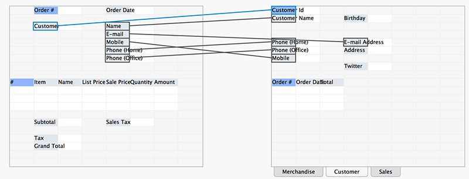
当左方为空白保存格时，连结管理员会自动帮您新增该字段。
Ragic有很方便的数据汇入精灵，可以帮助使用者将既有的Excel或CSV数据汇入Ragic数据库。如果您已经设计好表单，想汇入数据，您可点选表单上方「工具」按钮，选择「汇入\从Excel汇入数据」，接着依照汇入精灵的引导，一步步设定即可完成数据汇入。
如果您尚未设计表单，您也可以直接使用Excel或CSV来建立表单；您可点选点选表单上方「工具」按钮，选择「汇入\用Excel建立新表单」，一样依照汇入精灵的引导，一步步设定即可完成表单的建立同时汇入数据。
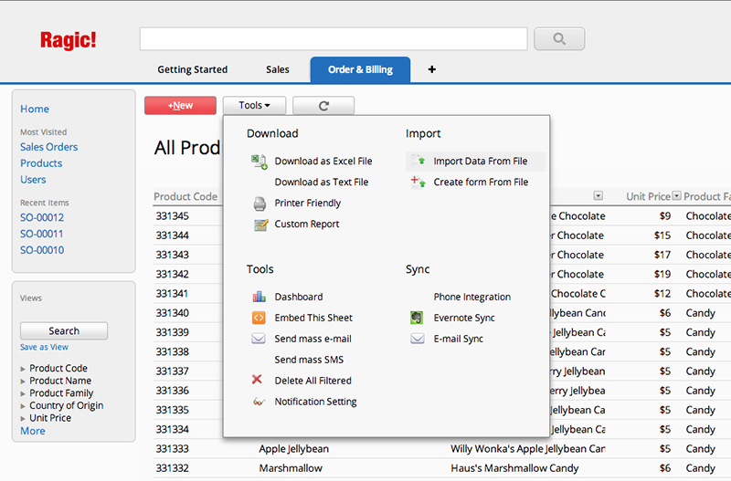
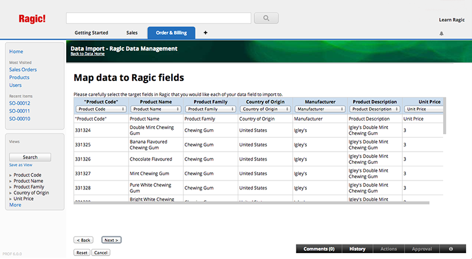
要将Ragic表单嵌入到网站非常简单，点选表单上的「工具」按钮(如下图)，选择「嵌入这张表单」，接着会出现一讯息方块，里面含有一段HTML嵌入语法；将讯息方块中的嵌人语法复制下来，到您的网店或部落格贴上，其它访客便能使用您在Ragic建立的表单啰!
您也可以利用讯息方块下方的选项，进一步设定表单在您的网站或部落格中要显示的样子。
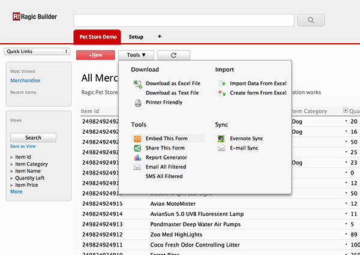
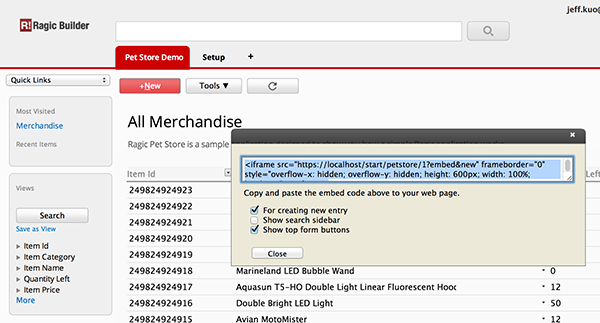
可以，所有的档案类型都可以上传到您的Ragic。设计时，只要将您的字段「输入型态」选为档案上传或图片上传；或者从左方「新增元件」页签中，拖拉一个「档案上传」或「图片上传」元件到您的表单中，即可拥有档案上传/图片上传功能。
使用时，使用者只要点击该字段，便会出现档案上传视窗供使用者上传档案或图片。数据保存后，如为档案，该字段会以超连结呈现，当使用者点选超连结，即可下载该档案；如为图片，则直接显示于保存格中，而当使用者点选图片时，即可下载该图片的全幅档案。
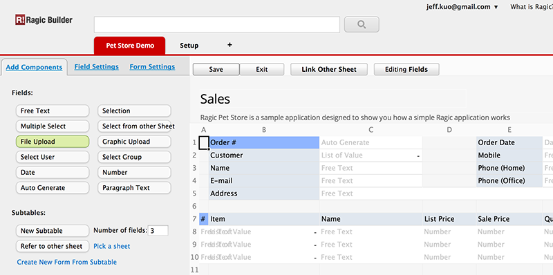
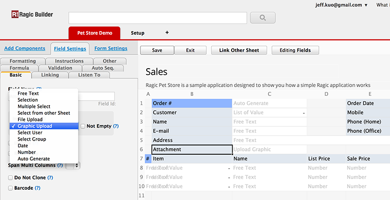
可以，只要点选「工具」按钮，选择「下载\下载成Excel档案」就可以啰。Ragic同时也提供「友善打印」功能，一样在「工具」，选择「下载\友善打印」即可。
不论在表单页还是列表页，您都可以将表单内容存成Excel；在表单页，存的是一笔数据，而在列表页，则是该表单所有的数据哦!
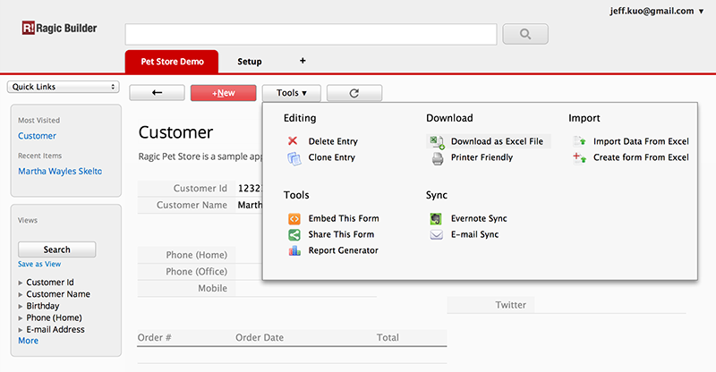
如果您会开发HTML表单，那么要写入Ragic表单非常简单，我们来看一个例子，假设您要新增数据到「范例：竉物店」中的merchandise表单：
1. 找出您要透过HTML表单来储存的字段，并记下它们的字段编号，字段编号位于设计模式中，域名的下方。
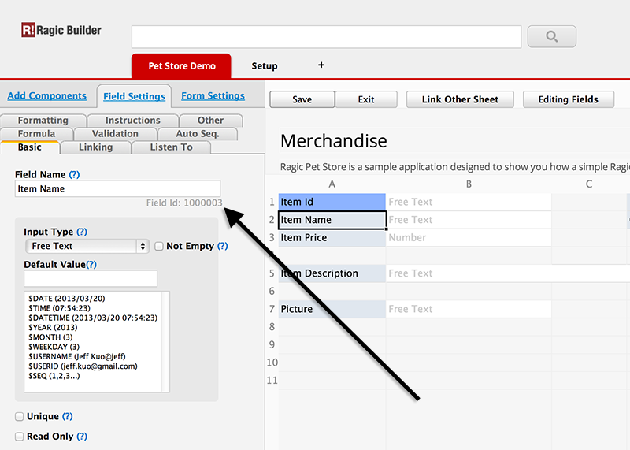
2. 建立您的HTML表单如下，在HTML表单中每个字段的name需使用上面所说的字段编号，它会以参数方式传入Ragic，Ragic藉由字段编号得知HTML字段与Ragic字段的对应关系；表单送出时，送出的Action为Ragic表单的API网址(即该Ragic表单的网址，惟将www.ragic.com 換成 api.ragic.com).
<!-- Your HTML form saves data to the same form URL, except change www.ragic.com to api.ragic.com -->
<!-- Adding the web parameter means that api server returns html instead of default JSON -->
<form action="http://api.ragic.com/start/petstore/1?html" method="POST">
<!-- Put down the field id as the parameter name for each field to map them to a field on the Ragic form -->
<p>Item Id: <input type="text" name="1000001" /></p>
<p>Item Name: <input type="text" name="1000003" /></p>
<p>Item Price: <input type="text" name="1000005" /></p>
<!-- Selections work the same way, just pass the selection value as parameter value -->
<p>Item Category:
<input type="radio" name="1000002" value="Dog" /> Dog
<input type="radio" name="1000002" value="Cat" /> Cat
</p>
</form>
3. 确认Ragic表单的权限设定，用户仍需拥有Ragic表单访问权限，才能从HTML表单将数据存入Ragic，如果您的表单是开放大众使用的，我们建议您可将该表单的所有人群组设为布告栏式使用者.
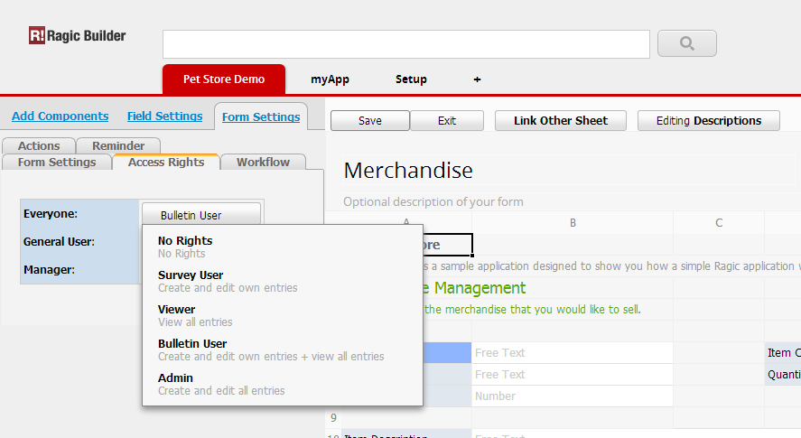
Ragic servers每天都会自动进行备份，如果您有特殊的需求，Ragic也提供各用户手动备份的功能，您可从「功能捷径」选择数据，进入数据库相关页面。
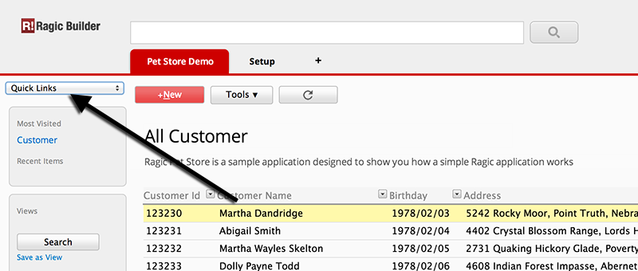
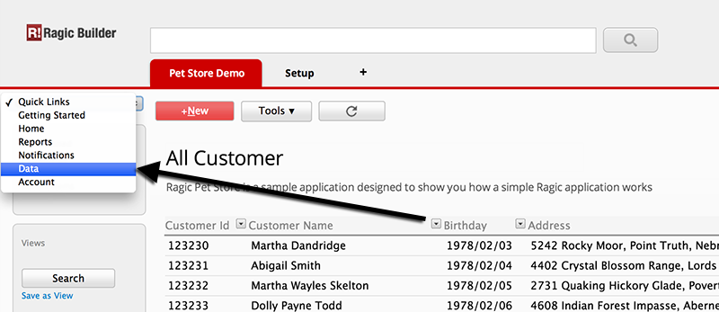
接着选择下载帐号数据备份，下载备份档。
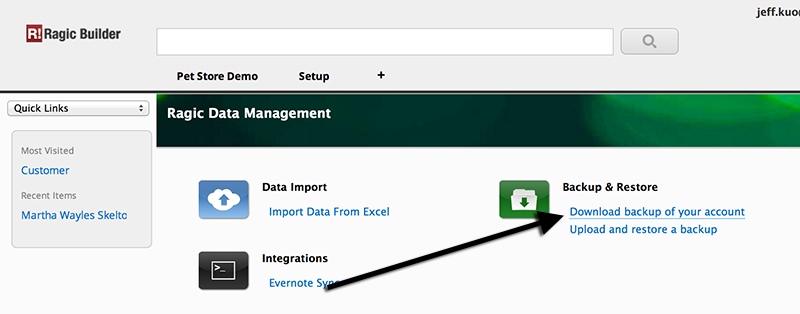
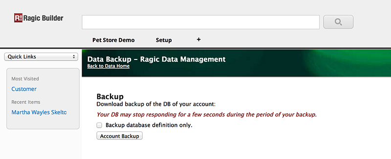
备份档为数据库的压缩备份，仅为数据库还原所使用，如果您需要可阅读的数据，您可参考8. 我可以把数据存成Excel吗？，在列表页利用「下载\下载成Excel档案」或「下载\下载成纯文字档案」功能，将Ragic数据库中的数据备份出来。
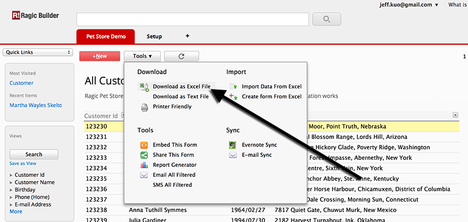
Ragic有一个Android app，您可以到这边下载，或是直接在Google Play上搜索 "Ragic"。我们的iOS iPhone/iPad app即将上线，上线前您可以直接用手机上的浏览器登录 www.ragic.com 也可以直接浏览编辑数据。
很简单，只要提供您表单的网址，即可让其它人看到这张表单的数据，Ragic每一个帐号、每一张表单甚至每一笔数据，都有一个独立的网址，您可在浏览器的网址列取得它.
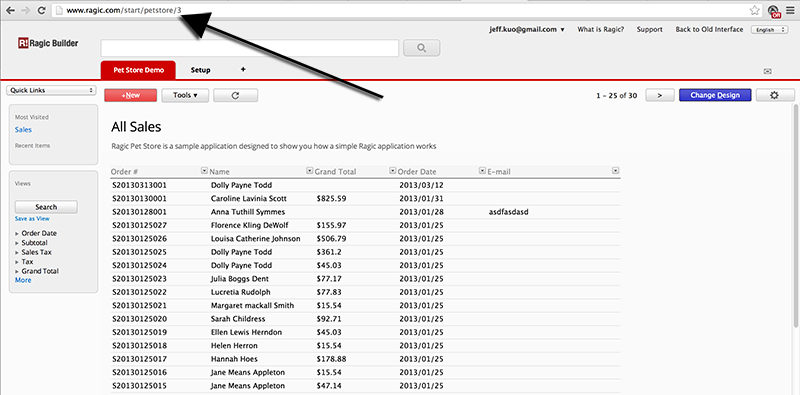
不过，由于不是每个人都有Ragic帐号，如果您要提供没有帐号的人也能查看，您必须先修改该表单的权限(在设计模式中，点选「表单设定」页签，接着点选「存取权限」页签)。
在这里，您可以看到您的帐号下所有的群组，在这张表单的权限为何，在此Ragic提供了一个特别的群组「所有人」，意即不论是否为Ragic的使用者，是否为您的使用者均属此群组。
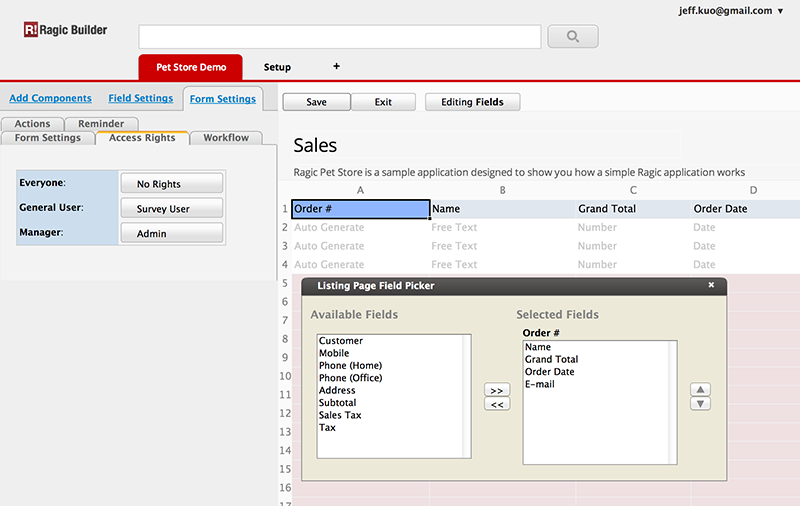
您可以为每个群组设定其在这张表单的存取角色为何，如果有使用者分属于2个群组，则他的权限会以2个群组中存取权限较高的为主。
每次权限设定后，记得「保存」您的设计，以便生效；列表页与表单页的存取权限是相同的，您只需要设定其中之一即可。
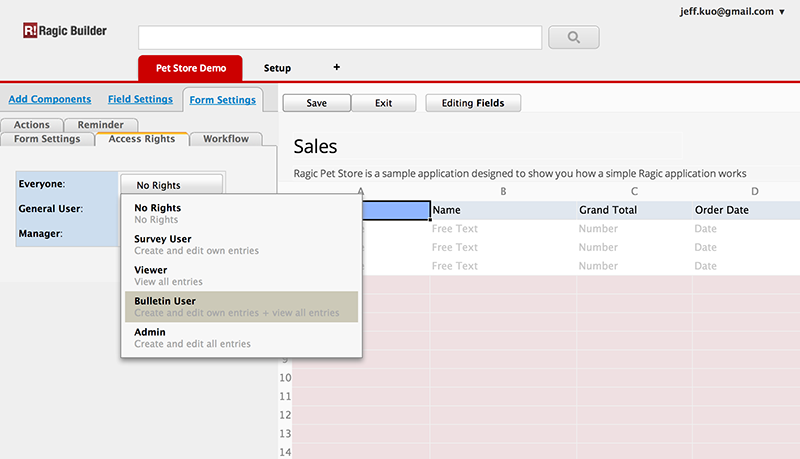
权限设定后，如有人仍无法存取表单，可请他登出后重新登入，让权限重新生效。
当使用者开始编辑数据时，该笔数据便会被Ragic锁定，如同时间有另一位使用者要编辑同一笔数据时，Ragic会提示该使用者该笔数据正在编辑中，该使用者应等到前一位使用者保存或取消，才能开始编辑，以避免数据互相覆盖。
但在某些特殊情况下(如联络不到使用中的人又急须修正数据..)，Ragic也允许使用者手动取消锁定，唯必须注意的是，取消锁定后，该笔数据将会以最后编辑保存的内容为主，原使用者所输入到一半的数据，有可能有数据覆盖的风险。
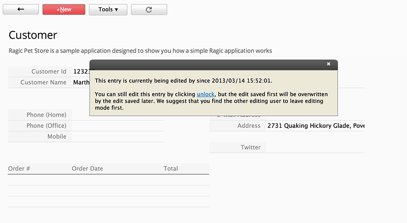
点选功能表中的「设定」页签，选择「使用者管理」，您将进入到使用者管理页面，您会看到您帐号下所有的使用者，在此点选「+新增」，接着填写该使用者数据即可。
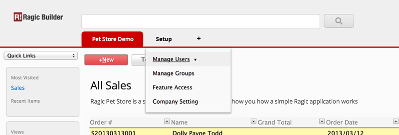
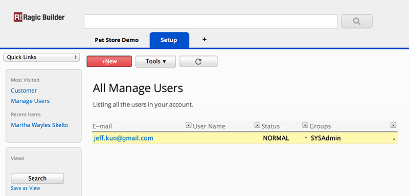
保存后，Ragic会自动发送一封Eamil (内含暂时密码)给该使用者，以便该使用者第一次登入Ragic。登入后，该使用者可自行俢改密码。
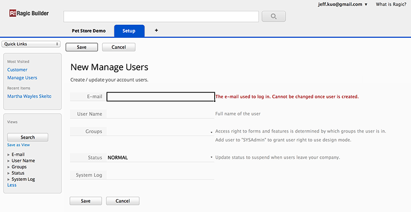
可以，我们可以利用「复制工作表」来达成。有些时候，相同的表单，可能因使用者角色的不同，所能看到的字段也不同，利用「复制工作表」，我们可以快速复制一张表单的设计，再增删部份字段即可。
将鼠标移到功能表中您想要复制的表单上，点选鼠标右键，选择「复制工作表」(或者点选右方小箭头，再选择「复制工作表」)，Ragic便可复制产生另一个相同的表单，两张表单将存取同一份数据库中的数据，不论您在哪一张表单中输入数据，二张表单都能看到您所新增的数据；同样的，当您在其中一张表单删除某一笔数据，另一张表单中也不会再看到该笔数据。
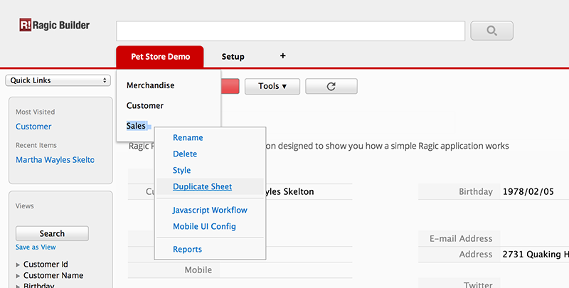
表单复制后，我们接着便可为这二张表单设计不同的存取权限，Ex.第一张表单仅能给A群组存取，第二张表单则给B群组使用。
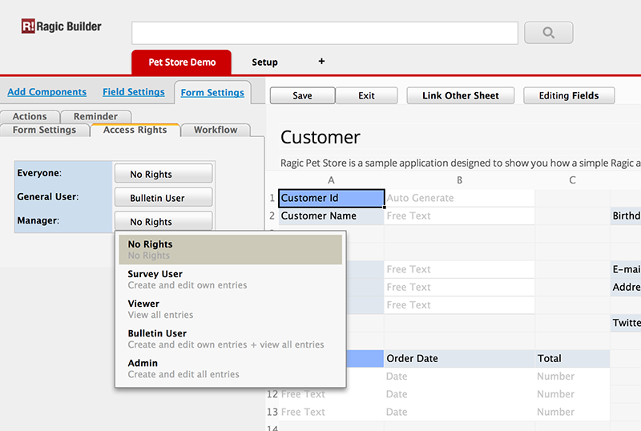
最后您可以设计这二张表单，新增或移除些字段，让它们拥有不同的显示内容了。
可以，每张表单都能设定每个群组所扮演的角色为何，每位使用者依照他所属的群组，会在不同的表单中取得不同的角色，当使用者角色为问卷式使用者，他只能存取自己所新增的数据；而当使用者角色为布告栏式使用者，则他可以看到所有的数据，但是只能编辑自己新增的数据。
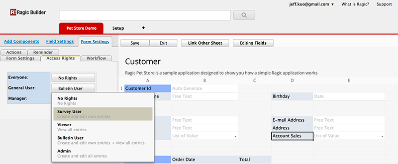
一般而言，使用者只能存取自己所新增的数据，但有些设计可能会有例外。当表单中有选择使用者或选择群组字段时，如又勾选了选定使用者有数据权限，则届时，该笔数据的拥有者将会变成该字段所指定的人或该群组下所有的人。
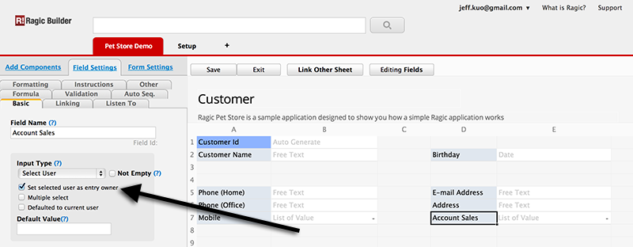
有几个方法能够帮助您处理大量使用者的情况
1. 公开表单: 您可以设计您的表单为公开表单，即任何人不需登入Ragic即可使用。如果您的系统不需要特别的权限，您可将您的表单存取权限设定为所有人都是问卷式使用者，那么每个人都将能填写表单；如果设成布告栏使用者，那么每个人不仅能填写表单，还能看到其他人所填写的内容。
如果您需要在数据输入后，随时了解该笔数据的最新情况，那么您可以考虑接下来的做法：E-mail认证。
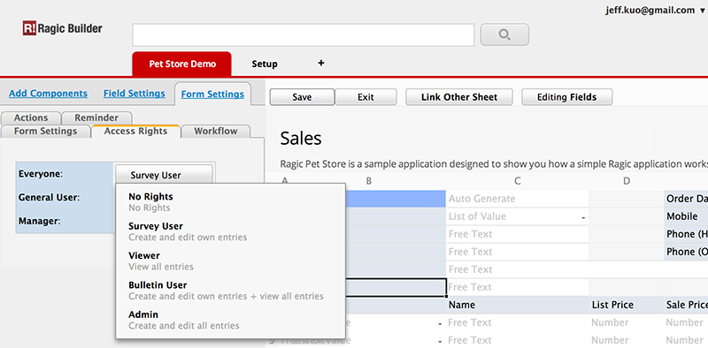
2. E-mail 认证: Ragic有一个很简单的方法，能够提供非Ragic的使用者，暂时拥有Ragic的存取权限。您可在表单中设计一Email字段，在「字段设定」页签中的「其它」页签，勾选其Email认证属性，之后每当表单存盘时，系统便会自动发送Email至该字段所填写的Email位址，Email中会提供本表单连结，让收件者可利用该连结登入Ragic.
透过Email认证，Ragic可以知道登入者是谁(不论是否拥有Ragic帐号)，可以判断登入者的存取权限。本功能通常是为了让使用者了解他所新增的数据，是否有变更。
这种方法的缺点是 (1) 这些使用者总是得透过Email来连结Ragic (2) 这些使用者无法以群组加以管理其在Ragic的使用权限。
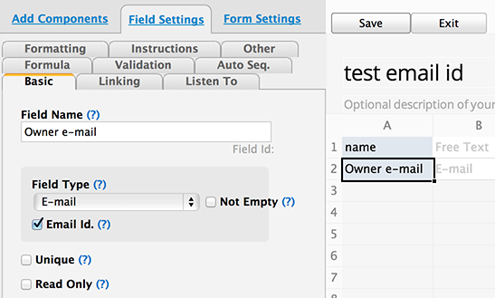
3. 大量授权: 虽然 Ragic的收费并不昂贵，但当您需要大量帐号时，加起来也不便宜，因此Ragic另有优惠的大量授权方案，以及私有主机方案，提供选择。您可以联络 sales@ragic.com，告诉我们您的需求，我们将帮助您选择最适合的授权方案。
1. 简易版有5张表单的限制而专业版则没有限制，表单指的是您所设计的使用者输入介面，而非数据，假设Customer表单中有100笔客户数据，这样只算是1张表单。
2. 简易版不支援server-side Javascript 工作流程，在专业版中，所有的表单都能透过server-side Javascript 工作流程撰写程式，来处理复杂的商业逻辑。基本上，任何Ragic Builder现行功能无法满足的需求，您都可以透过撰写server-side Javascript 工作流程来解决。
点选Ragic右上方「升级正式版!」，选择您要升级的Ragic版本。

您会被导引至加密的线上刷卡页面，您的Ragic帐号将会在付款后自动升级

您也可以随时从 [开始使用Ragic] => [Ragic帐号设定] => [帐号付款]，来进行升级 / 购买。

不用担心，试用期不会因为您升级正式版而消失哦，正式版的起算时间，会在试用期满之后才开始计算。
Ragic的上限多半是「软性上限」，也就是说当您的应用超过上限时，并不会马上停止运作。我们会e-mail通知您需要升级您的帐户以满足现阶段的使用量。